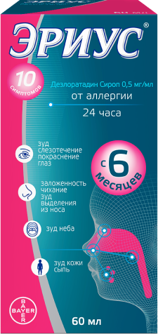

Все о сиропе Эриус®
Эриус – препарат с
тройной
активностью
против аллергии:
- противовоспалительной
- антигистаминной
- противоаллергической
Сироп Эриус разрешен к
применению с 6 месяцев
при аллергическом
рините и крапивнице
применению с 6 месяцев
при аллергическом
рините и крапивнице
L.RU.MKT.CC.11.2018.2458.

Сироп Эриус способствует устранению 10 симптомов аллергии:
- Зуд глаз
- Слезотечение
- Заложенность носа
- Зуд неба
- Выделения из носа
- Покраснение глаз
- Зуд в носу
- Чихание
- Сыпь на коже
- Кожный зуд
Крышка баночки
Безопасная пробка сполиэтиленовыми прокладками
имеет устройство защиты от
открывания детьми.
Низкая частота аллергических реакций
Согласно инструкции по медицинскомуприменению сиропа Эриус аллергические
реакции на препарат отмечались очень
редко (<1 случая на 10 000 пациентов).
У 99,99% пациентов не отмечалось никаких
аллергических реакций на препарат.
Не оказывает воздействия на ЦНС
При лечении сиропом Эриусвероятность появления такого
побочного эффекта как сонливость
(седация) не превышает 1 на 10 000
пациентов.
Без парабенов
Эриус для детей выпускается вформе сиропа и не содержит
потенциально аллергенные
парабены.
Разрешен к применению с
6-месячного возраста
Эриус – оригинальный дезлоратадини по нему проведено большое
количество исследований.
Накопленные клинические данные
сделали возможным пересмотр
возрастного порога, и с 2015 г. сироп
можно применять даже у самых
маленьких пациентов с 6 месяцев.
Cироп Эриус не нарушает
структуру сна
Сироп Эриус относится ко второмупоколению антигистаминных
препаратов, поэтому не влияет на
фазы сна ребенка.
Действие начинается в
течение 30 минут
Согласно инструкции сироп Эриусспособен начать действовать в
течение 30 минут после приема.
Эффект препарата сохраняется
24 часа.
Не требует строгого
медицинского контроля у детей
в возрасте 6 - 12 мес.
Для рутинного применения сиропаЭриус у детей 6-12 мес. не требуется
строгий медицинский мониторинг.
Содержит вспомогательные
вещества, чтобы нравиться детям
Для придания приятного вкуса в составсиропа Эриус входят разрешенные
для применения в пищевой и
фармацевтической промышленности
ароматизатор со вкусом жевательной
резинки и краситель.
Применяется 1 раз в день у всех
пациентов
Сироп Эриус имеет удобнуюкратность приема: всего 1 раз в
сутки для всех пациентов
независимо от возраста.
Этикетка
-
Сироп 60 мл во флаконах из
темного стекла. - Активное вещество: дезлоратадин
-
Разрешен к применению с 6-
месячного возраста -
Действие начинается в течение 30
минут - Эффект сохраняется до 24 часов
Флакон
Сироп Эриус выпускается вофлаконе из тёмного стекла и
хранится при температуре до
+30° Цельсия. После вскрытия
препарат эффективен до
окончания срока годности.
Ложечка
Дозировочная ложка с отметками2,5 и 5 мл помогает отмерить
необходимое количество сиропа
Сироп Эриус – мощное
действие против 10 симптомов
аллергии.
Без седативного эффекта.Разрешен у детей с 6 месяцев.
Способ применения
Детям в возрасте от 6 до 12 месяцев - по 1 мг (2 мл сиропа) 1 раз в день.Детям в возрасте от 1 года до 5 лет - по 1,25 мг (2,5 мл сиропа) 1 раз в день.
Детям в возрасте от 6 до 11 лет - по 2,5 мг (5 мл сиропа) 1 раз в день.
Взрослым и подросткам от 12 лет - по 5 мг (10 мл сиропа) 1 раз в день.
Информация предназначена для медицинских и фармацевтических работников
АО «БАЙЕР», Россия,107113, г. Москва, 3-я Рыбинская ул., д. 18, стр. 2,
тел.: +7 (495) 231-12-00, Факс: +7 (495) 231-12-02